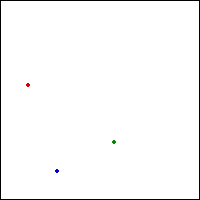
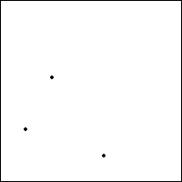

|  |  |
| The sequence | |||
| T2 followed by T1 followed by T3? | |||
| produces sequences of points converging to the points | |||
| (1/7, 4/7), (4/7, 2/7), and (2/7, 1/7) | |||
| shown below on the left. For comaprison, the previous 3-cycle is shown on the right. | |||
| |||
| The same points are produced by any cyclic permutation of the original sequence. For example, the cyclic permutations of | |||
| T2 followed by T1 followed by T3, | |||
| are | |||
| T1 followed by T3 followed by T2, | |||
| and | |||
| T3 followed by T2 followed by T1. |
Return to 3-Cycle in a different order.